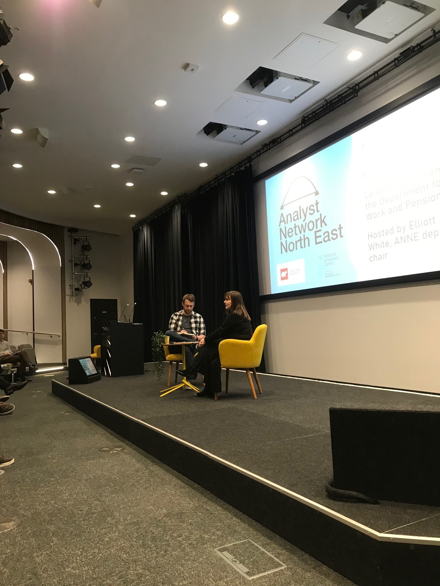

In another first, Analyst Network North East hosted our first live ANNEcdote at our Spring Conference. Marie Conlon, lead analyst for resource modelling and analysis in the Department for Work and Pensions (DWP) told us all about herself, her career journey and what she gets up to day to day, using analysis to improve the way DWP runs itself.
On we go…
To get us started, Marie gave us an introductory tour of her 32-year career in the civil service. Initially joining on a temporary contract in an operations role, Marie then migrated into corporate service / change roles within the organisation. During these early years, Marie told us how she developed a deep connection with what became DWP, and how the work it does, really matters to customers and society more widely.
In 2001, having initially studied Geography, Marie completed a MSc in Computing Science. Combining a move from the North East to London, with the learning she gained from her MSc, Marie became a member of the Government Operational Research Service (GORS). Marie felt that OR was for her, as it was the best placed profession, to help her fix things and solve problems. And it was also the place where you got to choose the best suited techniques for the problems you face every day.
Following her move into GORS, Marie worked in several areas within DWP. She contributed to the Department’s work tackling fraud and error and supporting housing benefit payments. Marie also helped to develop DWPs pensions policy, where she took a secondment to contribute to the creation of the National Employment Savings Trust, part of the roll out of automatic enrolment. Marie also spent several years working at the Department for Education before in 2015, returning to her roots, at DWP, in the North East. Today, Marie leads a team of analysts and non-analysts who are responsible for forecasting staffing needs within DWP. She told us how this work is vital to ensure the organisation can deliver pension and benefit payments to its customers.
The role itself came about, following a review Marie led in 2019, into DWPs approach to workforce planning and analysis. It produced several recommendations, and Marie is now responsible, with her job share, for delivering many of them. Marie’s team focus their efforts on measuring the time and effort required for DWPs operational workforce to complete tasks. And using that evidence to forecast available supply needs and whether it is enough to deal with the demands on DWPs services. In this work, Marie emphasised the importance of building a robust evidence base, so that the data used, and the assumptions made, which feed a range of demand and supply forecasting models, are robust. Marie also talked about the challenges of this work. Particularly where there is change in operational processes, which can make it challenging to maintain continuity and robustness in the underlying evidence base.
In support of this technical work, Marie also emphasised the importance of good stakeholder management, with people, within and beyond DWP. Marie told us how she prioritises this activity, and noted how important it is to build and maintain trust. And for some external stakeholders, such as HM Treasury, Marie and her team will facilitate open book exercises, to ensure everyone understands the basis of the forecasts produced by the Department.
Of course, everything doesn’t always go to plan all the time. And Marie shared her experience of having to adapt, at pace, to the demands of the covid-19 pandemic on DWP. Marie described how the pandemic created 2 million extra customers, almost overnight. And she highlighted the value of impact assessments, done at pace, to give the Department insight into whether easements it planned to put in place for operational processes, would give the Department a chance to meet the substantial spike to demand, it was facing. In light of this, and other experiences, Marie and her team continue to develop work in the area of sensitivity analysis. She talked about how this enables the Department to produce a best forecast, but within a reasonable range. Marie talked about how this analysis helps the Department to continually consider how it can handle expected demand, as well as how it could adapt to instances of increased and/or stressed demand.

Marie also talked about the journey the Department has been on, replatforming the tools it uses to produce its forecasts. When Marie started, much of the analysis was undertaken was SAP. Since then, Marie and her team have migrated into Excel, and more recently, are looking to migrate further into a SAS environment. Looking ahead, Marie talked about areas of development she is particularly excited about. She talked about how her team are starting to look at IT data, to observe how large groups of people in operations work and manage their cases. This additional source of data, although quite complex in nature with a lot of nuance, is providing a new insight which DWP can use to refine its assumptions. In this work, Marie and her team are being careful not to identify individuals. Rather, focusing the use case on the development of organisation wide planning assumptions.
Towards the end of our conversation, Marie talked about some of the barriers she has faced in her career to date. Marie talked about the advantages of working as an analyst in government. She talked about how she loves the analyst community, and how people can debate the issues based on their knowledge and expertise, rather than their grade. And she talked about how opportunities to progress are, and remain to this day, open. Equally, Marie identified how there are more opportunities to progress in London – particularly at more senior levels – when compared to Newcastle. This is something Marie has come to accept, although we did both agree, that the level of opportunity for analysts today in the North East, is significantly better than it was, just 10 years ago. Marie also talked about her experiences of imposter syndrome during her career and how she realised this could be a barrier to her progression/development and how important it was to recognise that and work on resolving it. Marie then turned to offer some advice to people seeking a career in analysis. She talked about how her own experience was based on following her own interests (i.e. a love of solving problems). And this is something she would advocate others to follow. Marie advised us all to prioritise stakeholder management, and to think carefully about how you are going to work with them. And finally, Marie emphasised the importance of coming up with proportionate answers to the challenge given. Better to do “good enough” analysis in a timely manner, than a perfect analysis which is too late to make a difference.
Marie sat down in conversation with Elliott White (ANNE committee secretary and deputy chair), at the Catalyst, Newcastle University on Wednesday 27 March 2024.